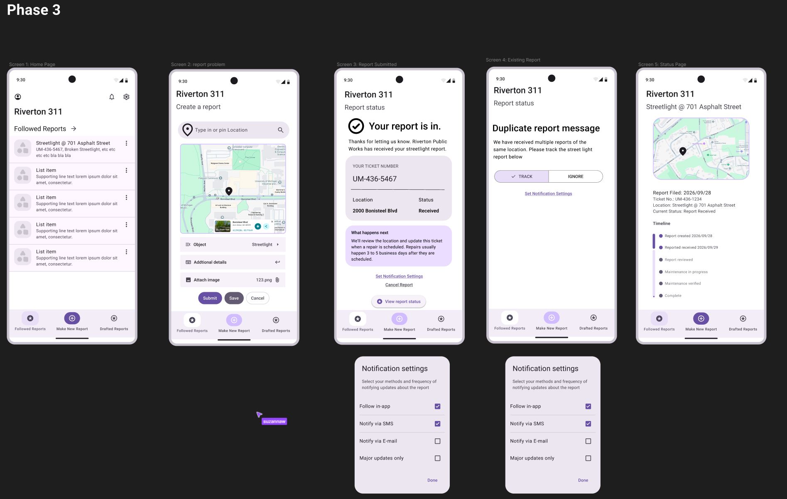

Product Team Sprint
· Week 4
For this week we spent some etime designing from the ground up a framework for one of several scenarios. One of which, Riverto 311, we chose. Split into teams, we each focused on different aspects of the scenario, mapping out interactions, identifying pain points, and proposing design solutions. we divided the design into five screens representing the process for the scenario of submitting a report on a broken streetlight to the city for maintenance The process we worked out was a menu screen displaying all followed reports, then a screen to subit the report, and then depending on if this has been reported before, it can either confirm the report or alert you that this has been reported before. Lastly there's the report status screen to show the status of any report you follow, be it one you reported yourself or someone else's that you've opted to follow.
We bounced between designing individually and coming back together as a team. Designing one screen and then coming back around to review each others work and adapt good ideas to the rest of the screens and resynchronise the design styles. Went quite well especially thanks to sticking to the Material UI design kit, letting independent design happen but still be cohesive in the end. It was also good to get new prompts for changes in the middle of design to simulate a real work environment, which we managed to do quite well by adding in the notification options system as prmpted by the new design requirements.
